API (Active Pharmaceutical Ingredient) Report:
Report on the route of synthesis for an API product – Glycopyrrolate.
Submitted by Alberdina Mariya Alexandrovna,
Kazakhstan, Atyrau
mariyaalberdina1980@outlook.com
2023
Content of the Report
CAS Registry Number: 596-51-0 3
2. Synthesis of Glycopyrrolate schemes. 8
2.1. Comprehensive research for common scheme. 9
2.1.2. Synthesis of mandelic acid from acetophenone. 11
2.2. Synthesis of Phenylglyoxylic acid. 14
2.3. Synthesis of cyclopentyl mandelic acid and it’s derivatives. 15
2.4. Alternative way with use of cyclopentyl glyoxylic acid ester. 18
2.5. Synthesis of Glycopirrolate from CPMA (cyclopentil mandelic acid) and it’s derivatives. 20
Below report is devoted to Glycopyrrolate or Glycopyrronium bromide, it’s properties, ways to obtain, it’s use in medicine, possible side effects from use of drugs with Glycopyrronium bromide as active pharmaceutical ingredient and other aspects of the theme.
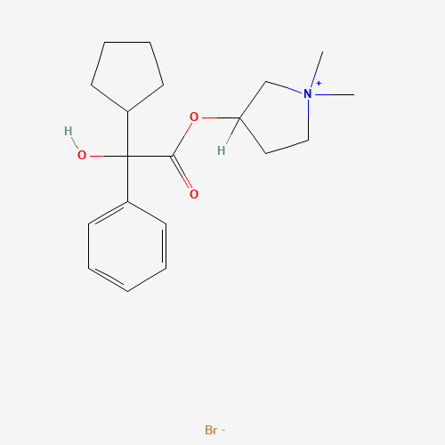
As seen in the above structure, Glycopyrrolate molecule has two chiral centres and can have four stereo isomers, i.e. two enantiomeric pairs of diastereoisomers. Glycopyrrolate is a racemic mixture containing only one pair of enantiomers. Commercially available Glycopyrrolate contains both the (R,S)-Glycopyrrolate and (S,R)-Glycopyrrolate isomers.2
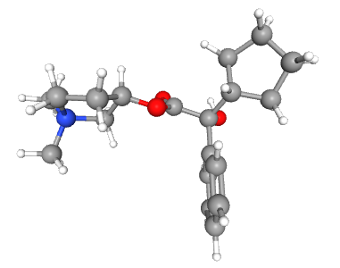
Pyrrolidinium, 3-[(2-cyclopentyl-2-hydroxy-2-phenylacetyl)oxy]-1,1-dimethyl-, bromide (1:1)
3-Hydroxy-1,1-dimethylpyrrolidinium bromide α-cyclopentylmandelate
Pyrrolidinium, 3-hydroxy-1,1-dimethyl-, bromide, α-cyclopentylmandelate
Pyrrolidinium, 3-[(cyclopentylhydroxyphenylacetyl)oxy]-1,1-dimethyl-, bromide
AHR-504
1,1-Dimethyl-3-hydroxypyrrolidinium bromide α-cyclopentylmandelate
Glycopyrrolate
Glycopyrronium bromide
β-1-Methyl-3-pyrrolidyl-α-cyclopentylmandelate methobromide
Robinul
Glycopyrronium
Tarodyl
Asecryl
Gastrodyn
Nodapton
Robanul
Tarodyn
Glycopyrrolate bromide
Copyrrolate
NSC 250836
NSC 251251
NSC 251252
NVA 237
Seebri
Glycopyrrone bromide
Qbrexza
Cuvposa
Sialanar
Seebri Breezhaler
Enurev Breezhaler
Tovanor Breezhaler 4
Additional ones:
Seebri Neohaler5
Molecular formula: C19H28BrNO3 · Br
Molecular weight 398.3 g/mol 6
Melting Point 192.5 °C 7
Soluble in organic solvents: ethanol, DMSO, dimethyl formamide, which should be purged with an inert gas. The solubility in these solvents is approximately 30 mg/ml.8 Storage of the drug should be in a cool, dry area protected from light before administration.9
Glycopyrrolate has been widely used as a preoperative medication to inhibit salivary gland and respiratory secretions. The most frequent reasons for administering anticholinergics include producing an effect of decreasing saliva, creating a sedative and amnesic effect, and preventing reflex bradycardia. Anticholinergics are not predictably effective in increasing gastric fluid pH or decreasing gastric fluid volume. Glycopyrrolate is among the most commonly used anticholinergic medications.
It is used perioperatively as a muscarinic receptor antagonist.
The topical formulation of glycopyrrolate is indicated to treat primary axillary hyperhidrosis in nine and older patients.
It is also helpful to reduce severe or chronic drooling in pediatric patients with neurologic conditions, such as cerebral palsy. The intravenous formulation of glycopyrrolate classically works to reverse vagal reflexes and bradycardia intraoperatively and reverse the muscarinic effects of cholinergic agents such as neostigmine or pyridostigmine.
Glycopyrrolate may be administered to reverse the neuromuscular blockade due to nondepolarizing muscle relaxants postoperatively and is frequently used in conjunction with neostigmine, a cholinesterase inhibitor.
Various oral inhalation formulations of glycopyrrolate are indicated for the long-term maintenance treatment of airflow obstruction in patients with chronic obstructive pulmonary disease (COPD).
Most frequently, clinicians use glycopyrrolate to reduce pharyngeal, tracheal, bronchial, and sialagogue effects preoperatively because decreased secretions are the desired effect during anesthesia when a tracheal tube is in place. A blockade of reflexive vagal cardiac inhibition reflexes during intubation and anesthetic induction may also occur.
Glycopyrrolate's primary mechanism of action is the blockage of acetylcholine's effects at the parasympathetic sites in various tissues. This blockage primarily occurs in the central nervous system, smooth muscle, and secretory glands. It also reduces the rate of salivation by preventing the stimulation of the acetylcholine receptors themselves. Glycopyrrolate does not cross the blood-brain barrier or the placenta. It has a slower diffusion rate relative to other anticholinergic drugs such as atropine and scopolamine.
Glycopyrronium reduces the body's ability to sweat. Therefore, it may cause hyperthermia and heat stroke in hot environments.
Generally, adverse reactions after glycopyrrolate use may include anticholinergic symptoms such as mydriasis, hyperthermia, tachycardia, and cardiac arrhythmia. They may also include blurred vision, constipation, cycloplegia, dry mouth, dry skin, flushing, photophobia, urinary retention, xerophthalmia (no tears in eyes), headaches, and diarrhea.
Glycopyrrolate may affect the patient's ability to perform tasks requiring mental alertness. In addition, the medication may induce drowsiness or blurred vision, which is exacerbated by the consumption of alcohol.
In the general population, usage may increase the risk of confusion, hallucinations, and anticholinergic effects
Usage also requires close monitoring in patients with hepatic impairment. For example, patients may not be able to operate heavy machinery safely.
Use glycopyrrolate with caution in patients with a hiatal hernia and reflux esophagitis. It can worsen prostatic hyperplasia symptoms and/or bladder neck destruction as it may increase urinary retention. In ulcerative colitis cases, a high dose may inhibit intestinal motility and worsen toxic megacolon or ileus symptoms. Glycopyrrolate administration is contraindicated in patients with ulcerative colitis. Since gastrointestinal motility may decline, constipation or intestinal pseudo-obstruction may occur. Because of its quaternary structure, glycopyrrolate cannot cross the blood-brain barrier and is almost devoid of the central nervous system and ophthalmic activity. Potent inhibition of salivary gland and respiratory tract secretions is the primary rationale for using glycopyrrolate as a premedication. Heart rate usually increases after intravenous administration but not intramuscular.10
After research work done, two general schemes appeared. First one derives from benzaldehyde or acetophenone and listed on the figure below. (scheme 1)
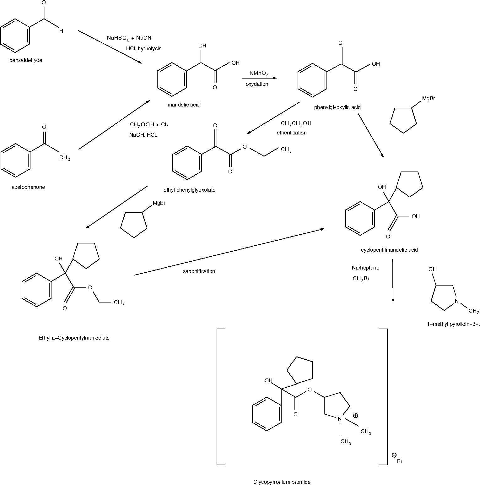
Building blocks are:
benzaldehyde , Benzoic aldehyde, Phenylmethanal, Benzenecarboxaldehyde, Benzenecarbonal.
Sodium hydrogen sulfate, sodium bisulfite
sodium cyanide
water for hydrolysis
The first reaction is “one-pot” substitution reaction – where benzaldehyde reacts with sodium bisulfate and we obtain intermediate - Benzaldehyde sodium bisulfite (reaction 1). Then sodium bisulfite part substitutes by CN component from sodium cyanide (reaction 2).
Now that we have mandelonitrile, we should carry out the reaction of hydrolysis in excess of concentrated HCl to rise the yield of mandelic acid (reaction 3). After 12 hours of hydrolysis in cold, we should hot the mixture to remove water and excess of HCl. After heating for five to six hours it is advisable to cool the mixture and filter the ammonium chloride and mandelic acid mixture that separates. The filtrate is then evaporated to dryness. This residue is added to the solid material obtained before. The product is deeply colored and must be dried in the air and light for at least twenty-four hours. The mixture of ammonium chloride and mandelic acid should be washed twice with portions of cold benzene. The insoluble portion is transferred to a suction funnel and sucked dry.
Reaction 1 (Substitution) (scheme 2)
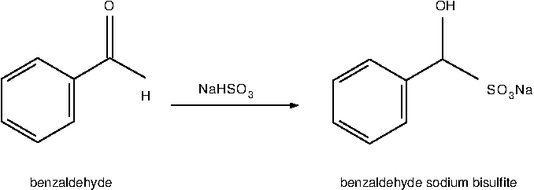
Molecular
Formula
C7H6O or
C6H5CHO Molecular
Formula C7H7NaO4S
Molecular Weight 106.12 Molecular Weight 210.18
Reaction 2 (Substitution) (scheme 3)
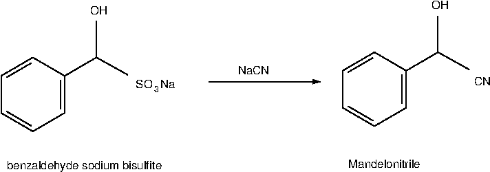
Molecular
Formula
C8H7NO
Molecular Weight 133.15
R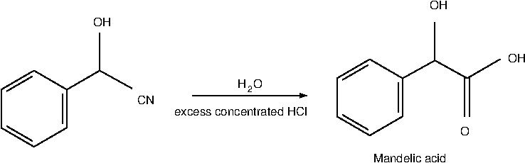
eaction
3 (Hydrolysis) (scheme 4)
Molecular Formula C8H8O3
Molecular Weight 152.14
Either of two methods may be used to extract the mandelic acid from the ammonium chloride.
(A) Extraction with Benzene—The mandelic acid is separated from the ammonium chloride by extraction with hot benzene. This is best done by dividing the solid mixture into ten approximately equal parts. One of these portions is placed in a flask boiling benzene. After a few minutes the hot benzene solution is decanted through a suction funnel. The filtrate is cooled in an ice bath and the mandelic acid that crystallizes is filtered with suction. The benzene is returned to the extraction flask containing the residue from the first extraction, and a new portion of the ammonium chloride-mandelic acid mixture is added and extracted as before. The process is repeated until the mandelic acid is completely removed from the ammonium chloride.
The yield of pure white mandelic acid melting at 118° is 229–235 g. (50–52 per cent of the theoretical amount based on benzaldehyde).
(B) Extraction with Ether .—The solid mixture is shaken for ten minutes with excess of ether. The ether solution is decanted through a suction filter and the solid thrown onto the filter and pressed dry. The solid is then returned to the reactor and shaken with half of previous ether again. This mixture is filtered by suction and the solid washed twice on the filter with portion of ether. Each portion is allowed to drain through the filter several times while the solid is kept porous with a spatula. The combined ether filtrate is then filtered through an ordinary funnel. The ether solution is placed in fractionating system with toluene added. The mixture is distilled on a steam bath through an efficient fractionating column as long as it distils easily. The temperature of the vapor rises to about 70°. The mixture is then heated over a free flame until the temperature in the column is 95° for getting residuals of distillate. The residual liquid is poured while still hot into a large beaker immersed in ice water. The liquid is stirred until it has become a thick crystal mush. The cooling is continued for two hours with occasional stirring so as to bring the temperature down to 5–10°. The mixture is filtered with suction and the solid pressed dry. It is then thoroughly washed on the filter with toluene in several portions. The yield is the same as that obtained by method (A).11
As the conclusion for this method I should say that this synthesis should be made under good hood due to hydrogen cyanid obtained, moreover toluene and benzene are very toxic ester. The ester is a little less toxic, but harmful too.
Building blocks are:
acetophenone, 1-Phenylethanone, Methyl phenyl ketone, Acetylbenzene.
acetic acid, ethanoic acid, Glacial acetic acid, Ethylic acid.
Chlorine
Sodium hydroxide
water for hydrolysis
The first reaction – is a chlorination reaction, where hydrogen in methyl group of acetophenone is replaced by chlorine atoms and dichloroacetophenone is obtained (reaction 4). Chlorination is continued until an excess of the halogen has been absorbed at temperature around 60 0C. This requires about 5 hours - completion of the reaction is indicated by the development of a yellow color. The reaction mixture is poured over crushed ice. The mixture is stirred several times and allowed to stand until the ice has melted. The dichloroacetophenone, which separates as a heavy lachrymatory oil, is removed. The yield is 90–97%. This product, containing only a few per cent of water and acetic acid, is pure enough for the preparation of mandelic acid. It may be purified by adding benzene, removing the water and benzene by distillation, and fractionally distilling the residual oil under reduced pressure. There is obtained 80–94% of a colorless oil boiling at 132–134°/13 mm. (142–144°/25 mm.).
The next step – to obtain Mandelic acid. We should fulfill a reaction between dichloroacetophenone and sodium hydroxide dissolved in water. The solution of sodium hydroxide is warmed to 60°, vigorous stirring is begun, and we now add dichloroacetophenone from previous step (either crude or distilled) from the dropping funnel. The dichloroacetophenone is added slowly at first so that the temperature does not exceed 65°. The addition requires about 2 hours. Stirring is continued for 1 hour longer while the temperature is maintained at 65° by means of a water or steam bath. The process is described by reaction 5 with obtaining benzaldehyde sodium carbonate. After addition of hydrochloric acid (reaction of hydrolysis – 6) the solution is extracted with ether. The extraction is continued until no more material is obtained.
Reaction 4 – (Chlorination) (scheme 5)
Molecular Formula C8H8O Molecular Formula CH₃COOH
Molecular Weight 120,15 Molecular Weight 60,052
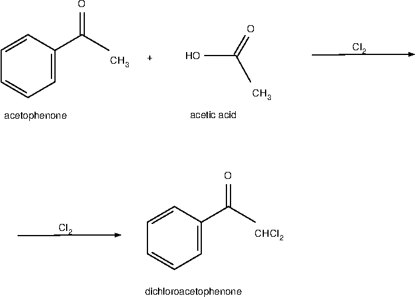
Reaction 5 – (Substitution) (scheme 6)
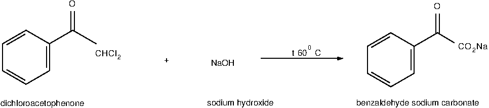
Molecular Formula C6H5COCHCl2 Molecular Formula NaOH
Molecular Weight 189.04 Molecular Weight 40.00
Reaction 6 – (Hydrolysis) (scheme 7)
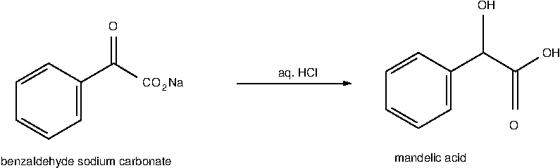
Molecular Formula C6H5COCHCl2
Molecular Weight 189.04
The ether is removed from the ether extracts by distillation, and the residue of crude mandelic acid is dried by warming it on a steam bath under the vacuum of a water pump. Benzene should be added, and the mixture is distilled. The acid in the residual mixture is brought completely into solution with addition of ethanol. The hot solution is then filtered through a warm Büchner funnel, and the filtrate is cooled overnight at 6°.The total yield is (85–90% based on the dichloroacetophenone, or 76–87% based on the acetophenone). The white crystalline product melts at 115–117° .12
This method is more preferable as there is no so harmful and dangerous compounds and intermediates as in the conventional method with cyanide.
There is a patent and an article about new way of mandelic acid producing which tells that: Mandelic acid was synthesized from benzaldehyde with chloroform in a 81% yield at 60°C for 2 h by using triethylbenzylammonium chloride (TEBA) and poly(ethylene glycol)-800 (PEG-800) as a complex phase transfer catalyst under ultrasonic irradiation. The main advantages of this present method are that the reaction time is much shorter and the yield is higher than those of the classical method. p-Methoxymandelic acid was also obtained in a 84% yield under the same reaction conditions.13
2.1.4. Efficient biosynthesis of (R)-mandelic acid from styrene oxide by an adaptive evolutionary Gluconobacter oxydans STA
In a new study, Gluconobacter oxydans was first used as a host cell for expressing SpEH to produceR-MA from bulk industrial chemical styrene oxide. After improving theR-MA tolerance of Gluconobacter oxydans by adaptive laboratory evolution together with the screened new strong promoter for enhancing SpEH expression, the production increased to 14.06 g/L) and the conversion rate greatly improved from 0.366 to 0.703 g/L/h. There is also described the membrane phenotype changes of the adapted Gluconobacter oxydans STA, including better membrane integrity and increased membrane hydrophobicity, which may directly relate to the improved catalytic efficiency of organic substrate styrene oxide. Finally, theR-MA production was further improved by an engineered Gluconobacter oxydans STA.14
The above mentioned way of synthesis is placed here for reference purposes as biotechnology is a very ecologically advanced and may be helpful in the future.
Synthesis of Phenylglyoxylic acid from Mandelic acid during oxygenation reaction 15 :
Building blocks are:
Mandelic acid, dl-Mandelic acid, 2-hydroxy-2-phenylacetic acid, Phenylglycolic acid, Amygdalic acid, Paramandelic acid, Racemic mandelic acid.
With help of NaOH and KMnO4
oxygenation (scheme 8)
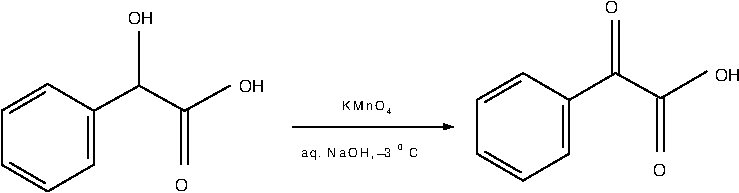
Molecular Formula C8H8O3 Molecular Formula C8H6O3
Molecular Weight 152.15 Molecular Weight 150.13
There are four commercially used ways of obtaining CPMA.
First one - transesterification -(Yield 36%):
Building blocks are:
Phenylglyoxylic acid, benzoilformic acid, 2-Oxo-2-phenylacetic acid, Oxophenylacetic acid, oxo(phenyl)acetic acid, Benzeneglyoxylic acid
Cyclopentylmagnesium bromide, or Bromo(cyclopentyl)magnesium, or Bromocyclopentylmagnesium
(scheme 9) transesterification
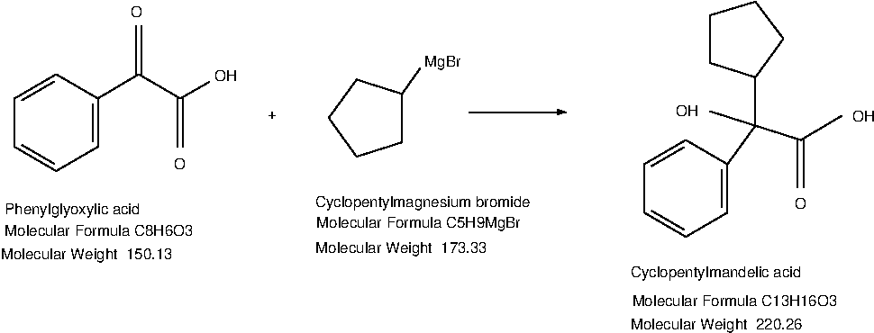
Second one, with etherification process before the main one (Yield 28%):
Building blocks are:
1. Phenylglyoxylic acid, benzoilformic acid, 2-Oxo-2-phenylacetic acid, Oxophenylacetic acid, oxo(phenyl)acetic acid, Benzeneglyoxylic acid
2. ethanol, ethyl alcohol, alcohol, grain alcohol, Methylcarbinol, Ethyl hydroxide, Ethyl hydrate.
etherification (scheme 10)
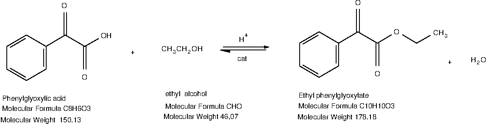
transesterification (scheme 11)
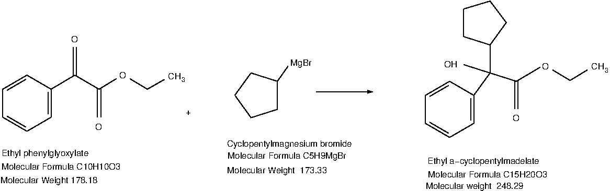
Third one, with etherification process (similar to abovementioned but with methyl alcohol) before the main transesterification (Yield 30 %):
Building blocks are:
Methylphenyl glyoxylate, Phenylglyoxylic acid methyl ester, Benzoyl formic acid methyl ester.
Cyclopentadienyl magnesium bromide.
Transesterification (scheme 12)
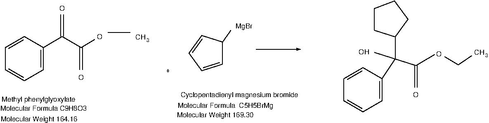
After saponification of Ethyl a-cyclopentylmadelate we obtain Cyclopentyl mandelic acid – intermediate for Glycopyrrolate.16
I should mention here, that after long research, unfortunately I did found nothing clear about obtaining cyclopentyl glyoxylic acid, which after easy etherification we may convert to cyclopentyl glyoxylic acid ester (hazardous enough, but available for purchase)17. But I add here this chain of synthesis as this way gives additional yield to reaction of obtaining CMPA.18
Building blocks are (Yield 56%):
ethyl 2-cyclopentyl-2-oxoacetate19, ETHYL CYCLOPENTYL(OXO)ACETATE20, Cyclopentyl-oxo-acetic acid ethyl ester, Ethylcyclopentyl(oxo)acetate, Ethyl2-cyclopentyl-2-oxoacetate, Oxocyclopentylacetic acid ethyl ester, cyclopentyl glyoxylic acid ester21
Phenylmagnesium bromide22
scheme 13
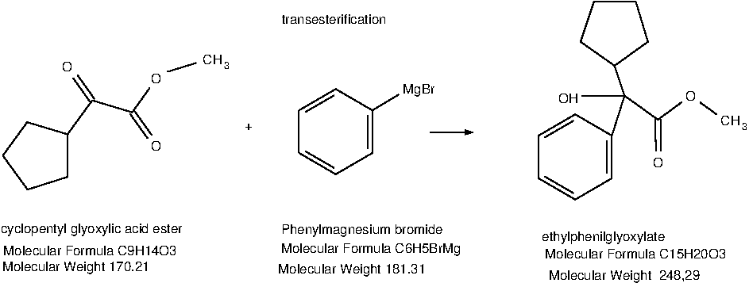
After saponification of Ethyl a-cyclopentylmadelate we obtain Cyclopentyl mandelic acid – intermediate for Glycopyrrolate
S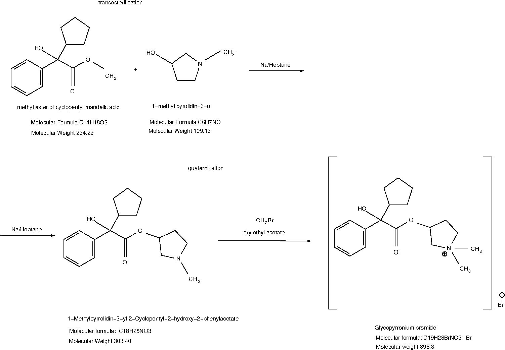
cheme
14
Intermediates for Glycopirrolate:
methyl ester of cyclopentyl mandelic acid
1-methyl-pyrrolidin – 3 - ol
Following the original procedure disclosed in the U.S. patent number 2956062, Glycopyrrolate is prepared by transesterification of methyl ester of cyclopentyl mandelic acid with 1-methyl pyrolidin-3-ol; followed by quaternization of the resulting ester.
Transesterification of methyl ester of cyclopentyl mandelic acid with 1-methyl pyrolidin-3-ol is carried out under the influence of metallic sodium to obtain 1-Methylpyrrolidin-3-yl 2-Cyclopentyl-2-hydroxy-2-phenylacetate23 which is the key intermediate for the synthesis of glycopyrrolate. As a tertiary amine, the cyclopentylmandelic acid ester can be purified by extraction of its salt into water to remove impurities followed by back extraction into an organic solvent.
The final step of the synthesis is N-methylation of the ester using methyl bromide to form the solid quaternary ammonium salt. As the reactants are applied as racemates, glycopyrrolate is formed as a mixture of two pairs of diastereomers which are separated by final repeated recrystallization to get the desired higher melting RS/SR-diastereomers.
Although the synthesis is easy from a chemical point of view, the scale up in the pilot and production facilities bears some drawbacks. The transesterification using metallic sodium represents a severe safety problem. Furthermore, the handling of the intermediate, cyclopentylmandelic acid ester needs special attention as it is known to cause reversible exogenous psychosis when exposed to man, and the loading of numerous vessels and tanks with solutions containing ester or its salt is potentially more hazardous.24
There is a little alternative way of obtaining CPMA with use of sulfonyl compound of formula (scheme 15):
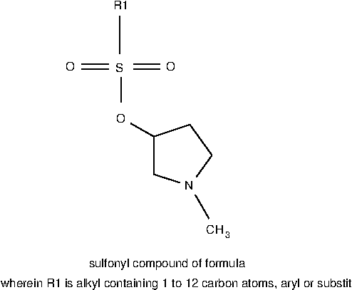
The present invention provides an economic, industrially feasible and high yielding process for the preparation of highly pure glycopyrrolate intermediate under mild conditions. According to one aspect, the present invention provides a process for preparation of pure cyclopentyl mandelic acid ester comprising reacting cyclopentyl mandelic acid with sulfonyl compound of formula (II) in presence of a base and a solvent.25
Or we may use cyclopentyl mandelic acid itself as it showed below26
s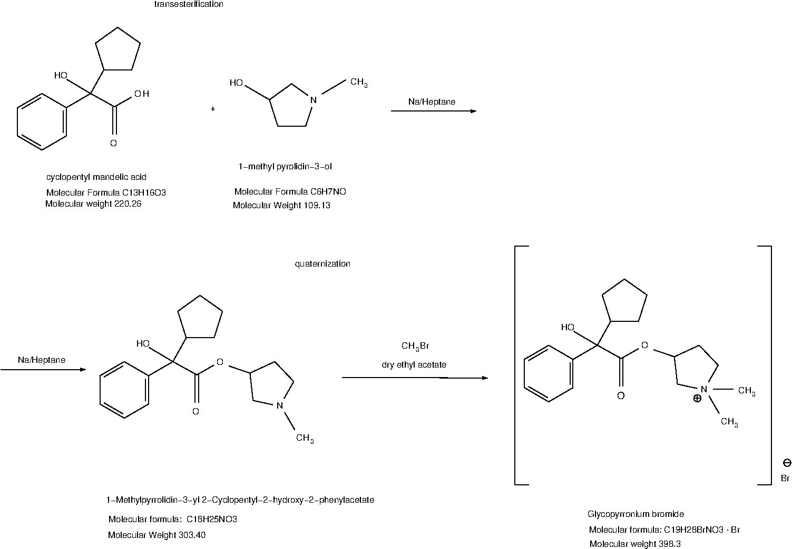 cheme 16
The research done forces us to point out two commercially perspective and easiest ways. One – those which begins from acetophenone, and the second one – which begins from Oxocyclopentylacetic acid ethyl ester, because of Yeild of CPMA equals to 56%, almost two times more than in other 3 ways of synthesis CPMA (cyclopentyl mandelic acid) the important intermediate on the route of synthesis of Glycopyrrolate. Additional way with slight changes is listed here.27
There are a lot of recent patents with slight changes in related synthesis, it’s better to wail a little until implementation of those new technologies will be done for someone. It’s better to use more conventional and proven technologies.
17https://pubchem.ncbi.nlm.nih.gov/compound/Ethyl-cyclopentyl_oxo_acetate#section=GHS-Classification
20https://www.fishersci.fi/shop/products/ethyl-2-oxocyclopentylacetate-95-thermo-scientific-1/15418148